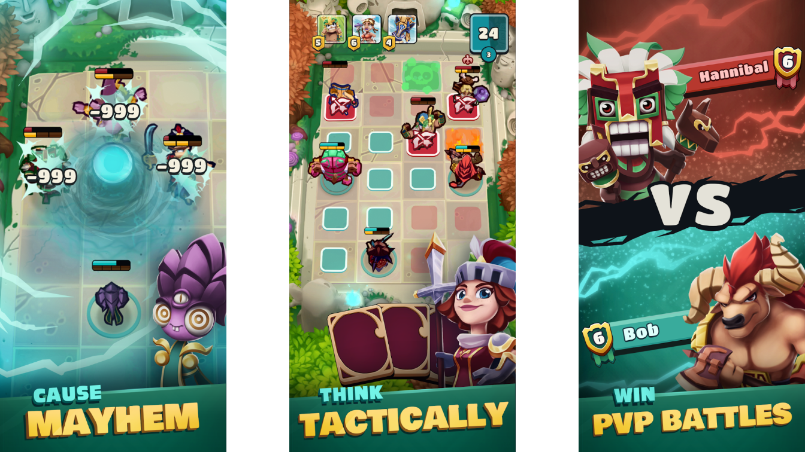
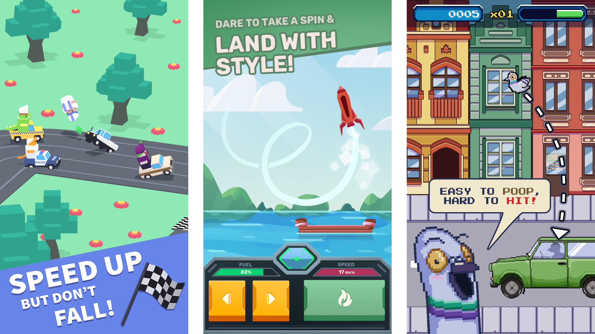

Uragun
as Lead Programmer
I’m responsible for implementation of many things in twin-stick shooter game Uragun: gameplay, movement, progression, UI, animations, optimisation, shaders etc. While I joined the team as a regular programmer, I wanted to be more involved and gained trust to, at some point, take over a lead role in project.
Total Tank Simulator
as Unity Developer
I was responsible for implementing Steam Workshop mods support from the ground up for already released Total Tank Simulator.
Legendary
as Junior Unity Developer
Legendary is mobile online tactical browler game in which you have to collect your heroes, level them up and use them to fight other players. I did many things for this project including gameplay logic, custom shaders and UI.
Mobile Games
During my time as an intern in DaftMobile I was responsible for fast prototyping of many mobile game ideas. Many of them were later developed and released on AppStore and Google Play.
Side projects
In my free time apart of playing games I love to create all kinds of things. Either it’s music,
visuals,
photography or games I always look towards experimenting and extending my skills.
Currently as a side
project I’m making a prototype for Roguelite VR game with vampires, motorcycles and a lot of
shooting.
The
goal is to teach myself Unreal Engine, it’s rendering optimisation techniques and to make something
cool
for
myself and others to enjoy.
Here's some of the stuff that I've made:
Atlantis
Thesis project
When I played Abzû few years ago I was amazed by how well it looked and ran on my pretty old PC. So,
for this project I wanted to explore optimisation techniques which allow to simulate and display big
amounts of objects in real time.
I’ve implemented movement algorithm using Data-Oriented Design and compute
shaders. Fish are rendered in optimal way using GPU Instancing and persistent transform data in GPU
buffers
that are updated directly in compute shaders. There is also asynchronous data synchronisation, so I
could
query physics on CPU and send back the results to GPU without blocking game execution. I’ve
implemented
animation in vertex shader that takes into account acceleration and rotation changes of every fish.
I’ve also
did some visual effects, so the enviroment feels like underwater.
I tried to include as much elements as possible, because I know that it’s often easy to make
conclusions
from prototypes where only the bare minimum is present, but biggest challenges often comes when you
try
to
put something in context.
Reactive visuals for music shows
I wanted to explore possibilities of visually reacting to things that happen during a show in real time. I’ve had a chance to make projects for a few shows that analysed audio signal and used data captured by Kinect to create things that subtly reacts to performer and also to audience.
Multiplayer FPS Prototype
Idea was to create FPS where you don’t shoot directly to yout oponent, but instead to traps that are everwhere around. A bit like in Quake where with rocket launcher you have to think a bit ahead and aim where your enemy will be in a second. I’ve made a prototype, but sadly because of lack of time at that moment it was abandoned.
Hello! I’m a game developer generalist who loves to create all kinds of things. I’m eager to learn
new stuff and take on challenges.
I’m experienced mostly in Unity, but as a quick learner I don’t feel tied
to single game engine. For me game developement concepts are very universal, so I’m always open to
other
technologies.